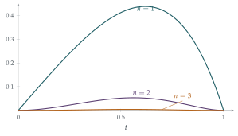

Show that, for \(n = 2, 3, 4, \ldots\), \[\frac{\mathrm{d}^2}{\mathrm{d}t^2}\Bigl(t^n(1-t)^n\Bigr) = n t^{n-2}(1-t)^{n-2}\Bigl[(n-1) - 2(2n-1)t(1-t)\Bigr].\]
The sequence \(T_0, T_1, \ldots\) is defined by \[T_n = \int_0^1 \frac{t^n(1-t)^n}{n!}\,\mathrm{e}^t\,\mathrm{d}t.\] Show that, for \(n \geq 2\), \[T_n = T_{n-2} - 2(2n-1)T_{n-1}.\]
Evaluate \(T_0\) and \(T_1\) and deduce that, for \(n \geq 0\), \(T_n\) can be written in the form \[T_n = a_n + b_n\mathrm{e},\] where \(a_n\) and \(b_n\) are integers (which you should not attempt to evaluate).
Show that \(0 < T_n < \dfrac{\mathrm{e}}{n!}\) for \(n \geq 0\). Given that \(b_n\) is non-zero for all \(n\), deduce that \(\dfrac{-a_n}{b_n}\) tends to \(\mathrm{e}\) as \(n\) tends to infinity.
The hook
How would you find good fractions approximating \(e\)? You could truncate the series \(1 + 1 + \frac12 + \frac16 + \cdots\), but the fractions you get are not especially good for the size of their denominators. This question does something much cleverer. It builds a family of integrals, each of which is a small number of the form “integer \(+\) integer \(\times\, e\)”. If \(a + be\) is tiny, then \(e\) is very close to \(-a/b\), and the integrals hand us a sequence of excellent fractions: \(\frac{19}{7}\), \(\frac{193}{71}\), \(\frac{2721}{1001}\), …
The same trick, integrals that are simultaneously small and of the form “integer combination of the number you care about”, is behind some of the deepest irrationality proofs in mathematics, including Hermite’s proof that \(e\) is transcendental and Apéry’s proof that \(\zeta(3)\) is irrational.
Before you start
Look at the integrand \(\frac{t^n(1-t)^n}{n!}e^t\) on \([0, 1]\).
What is the largest value of \(t(1-t)\) on \([0, 1]\)? What does that tell you about the size of \(T_n\) as \(n\) grows?
The maximum of \(t(1-t)\) is \(\frac14\), at \(t = \frac12\). So the integrand is at most \(\frac{e}{4^n n!}\), which shrinks extraordinarily fast (Figure 2.9.1). That smallness is half the story. The other half, that \(T_n\) has the special form \(a_n + b_n e\), comes from integrating by parts.
Working it through
Stage 1 Differentiating twice
Let \(p(t) = t^n(1-t)^n\). By the product rule, \[p'(t) = n t^{n-1}(1-t)^n - n t^n(1-t)^{n-1} = n t^{n-1}(1-t)^{n-1}(1 - 2t).\]
Differentiate again. You will get two terms; take out the common factor \(n t^{n-2}(1-t)^{n-2}\). To match the required form, you need to rewrite \((1 - 2t)^2\) in terms of \(t(1-t)\). How?
Differentiating \(n\,[t(1-t)]^{n-1}(1 - 2t)\) by the product rule (note that \(\frac{\mathrm{d}}{\mathrm{d}t}[t(1-t)] = 1 - 2t\)): \[\begin{aligned} p''(t) &= n(n-1)[t(1-t)]^{n-2}(1-2t)^2 - 2n[t(1-t)]^{n-1} \\ &= n t^{n-2}(1-t)^{n-2}\Bigl[(n-1)(1-2t)^2 - 2t(1-t)\Bigr]. \end{aligned}\] Now \((1 - 2t)^2 = 1 - 4t + 4t^2 = 1 - 4t(1-t)\), so the bracket is \((n-1) - 4(n-1)t(1-t) - 2t(1-t) = (n-1) - 2(2n-1)t(1-t)\).■
Stage 2 Integrating by parts twice
\(p(t)\) is zero at both \(t = 0\) and \(t = 1\). What about \(p'(t)\), for \(n \geq 2\)? Why does that matter when you integrate \(p(t)e^t\) by parts?
For \(n \geq 2\), \(p'(t)\) contains the factor \(t^{n-1}(1-t)^{n-1}\), so it also vanishes at both ends. Integrating by parts twice, every boundary term is zero: \[\int_0^1 p\, e^t\,\mathrm{d}t = \Bigl[p\,e^t\Bigr]_0^1 - \int_0^1 p'\, e^t\,\mathrm{d}t = -\Bigl[p'\,e^t\Bigr]_0^1 + \int_0^1 p''\, e^t\,\mathrm{d}t = \int_0^1 p''\, e^t\,\mathrm{d}t.\] From Stage 1, \(p''(t) = n(n-1)\,t^{n-2}(1-t)^{n-2} - 2n(2n-1)\,t^{n-1}(1-t)^{n-1}\). Divide by \(n!\): \[\frac{p''(t)}{n!} = \frac{t^{n-2}(1-t)^{n-2}}{(n-2)!} - 2(2n-1)\frac{t^{n-1}(1-t)^{n-1}}{(n-1)!}.\] Multiplying by \(e^t\) and integrating gives \(T_n = T_{n-2} - 2(2n-1)T_{n-1}\).■
Stage 3 The integer structure
\(T_0 = \int_0^1 e^t\,\mathrm{d}t = e - 1\). For \(T_1 = \int_0^1 (t - t^2)e^t\,\mathrm{d}t\), integration by parts gives \(\int_0^1 t e^t\,\mathrm{d}t = 1\) and \(\int_0^1 t^2 e^t\,\mathrm{d}t = e - 2\), so \(T_1 = 1 - (e - 2) = 3 - e\).
\(T_0 = -1 + 1 \cdot e\) and \(T_1 = 3 + (-1)\cdot e\). Why must every \(T_n\) have the form \(a_n + b_n e\) with integer \(a_n\), \(b_n\)?
By strong induction: if \(T_{n-2} = a_{n-2} + b_{n-2}e\) and \(T_{n-1} = a_{n-1} + b_{n-1}e\) with integer coefficients, then \[T_n = \bigl(a_{n-2} - 2(2n-1)a_{n-1}\bigr) + \bigl(b_{n-2} - 2(2n-1)b_{n-1}\bigr)e,\] and the new coefficients are integers too.■
Stage 4 Small, and therefore informative
For \(0 < t < 1\), the integrand is positive, and \(t^n(1-t)^n \leq 1\) and \(e^t < e\). So \[0 < T_n < \int_0^1 \frac{e}{n!}\,\mathrm{d}t = \frac{e}{n!}.\]
Divide \(0 < a_n + b_n e < \dfrac{e}{n!}\) by \(|b_n|\). What does that say about the distance between \(e\) and \(-a_n/b_n\)?
Dividing by \(|b_n|\), which is a positive integer and so at least \(1\), \[\left| e - \left(\frac{-a_n}{b_n}\right) \right| = \frac{|a_n + b_n e|}{|b_n|} < \frac{e}{n!\,|b_n|} \leq \frac{e}{n!}.\] The right-hand side tends to \(0\), so \(-a_n/b_n \to e\).■
Here are the first few, computed from the recurrence:
| \(n\) | 2 | 3 | 4 | 5 | 6 |
|---|---|---|---|---|---|
| \(-a_n/b_n\) | \(\dfrac{19}{7}\) | \(\dfrac{193}{71}\) | \(\dfrac{2721}{1001}\) | \(\dfrac{49171}{18089}\) | \(\dfrac{1084483}{398959}\) |
| error | \(4 \times 10^{-3}\) | \(3 \times 10^{-5}\) | \(1 \times 10^{-7}\) | \(3 \times 10^{-10}\) | \(5 \times 10^{-13}\) |
The fraction \(\frac{2721}{1001}\) is correct to \(6\) decimal places with only a four-digit denominator.

Looking back
Integration by parts as a recurrence machine. Because the polynomial and its derivative vanished at both ends, integrating by parts gave a clean recurrence with no boundary terms.
Structure and size together. The recurrence showed \(T_n\) has the form \(a_n + b_n e\); the bound showed it is small. Neither alone says anything about approximating \(e\).
Don’t compute what you don’t need. The question told us not to evaluate \(a_n\) and \(b_n\), and the argument never needed them; it needed only that they were integers.
What’s really going on
The question stops just short of a famous theorem. Suppose \(e = p/q\) with \(p, q\) positive integers. Then \[q\,T_n = q a_n + b_n p\] is an integer. But \(0 < q\,T_n < \dfrac{qe}{n!}\), and for large \(n\) the right-hand side is less than \(1\). So \(q T_n\) would be an integer strictly between \(0\) and \(1\), which is impossible. Hence \(e\) is irrational. This is the “trap an integer between \(0\) and \(1\)” idea from Section 1.4, delivered by integrals instead of series. Integrals of exactly this kind, with polynomials like \(t^n(1-t)^n\), were used by Charles Hermite in 1873 to prove that \(e\) is transcendental: it is not a root of any polynomial with integer coefficients.
Continued fractions
The fractions in the table are not just good; they are among the best possible. The continued fraction of \(e\), found by Euler, has a beautiful pattern: \[e = [2; 1, 2, 1, 1, 4, 1, 1, 6, 1, 1, 8, \ldots],\] and its convergents are \(2, 3, \frac83, \frac{11}{4}, \frac{19}{7}, \frac{87}{32}, \frac{106}{39}, \frac{193}{71}, \ldots, \frac{2721}{1001}, \ldots\). Our \(-a_n/b_n\) are exactly every third convergent. No fraction with a smaller denominator gets closer to \(e\). Euler’s pattern was itself the first proof that \(e\) is irrational, since only rational numbers have finite continued fractions.
Apéry’s miracle
In 1978 Roger Apéry announced a proof that \(\zeta(3) = 1 + \frac18 + \frac1{27} + \cdots\) is irrational, a question that had been open since Euler (see Section 2.3). His proof was so unexpected that the audience at first did not believe it. A year later Frits Beukers found a short version using integrals of the form \[\int_0^1\!\!\int_0^1 \frac{-\ln(xy)}{1 - xy}\, P_n(x) P_n(y)\,\mathrm{d}x\,\mathrm{d}y,\] where \(P_n\) is built from \(\frac{\mathrm{d}^n}{\mathrm{d}x^n}\bigl(x^n(1-x)^n\bigr)\). These integrals are small, positive, and of the form “integer \(+\) integer \(\times\, \zeta(3)\)”, divided by a controlled denominator: exactly the strategy of this question. Whether \(\zeta(5)\), or \(e + \pi\), is irrational is still unknown.
The thinking skill
If a quantity is known to be an integer combination of some numbers, and also known to be small but not zero, it carries information: about approximations, and sometimes about irrationality.
The pattern is “structure from algebra, size from analysis”. It recurs throughout number theory, and it is one of the places where analysis and algebra meet most fruitfully.
Try this next
Run the recurrence. Compute \(a_n\) and \(b_n\) for \(n = 2, 3, 4\) from the recurrence and check the fractions in the table. Show that the signs of \(b_n\) alternate.
A sharper bound. Show that \(0 < T_n < \dfrac{e}{4^n\, n!}\). How much does this improve the error estimate for \(-a_n/b_n\)?
The irrationality proof. Write out the argument in the box above carefully. Where exactly do you use that \(T_n > 0\)?
A different weight. harder Repeat the question with \(e^t\) replaced by \(e^{2t}\) (so \(U_n = \int_0^1 \frac{t^n(1-t)^n}{n!}e^{2t}\,\mathrm{d}t\)). Find a recurrence for \(U_n\), show that \(U_n\) is a combination of \(1\) and \(e^2\) with rational coefficients, and investigate whether the argument still proves that \(e^2\) is irrational. (Compare Section 1.4.)
Further reading
Ivan Niven, Irrational Numbers (Mathematical Association of America). The classic short book on irrationality proofs, including Hermite’s method.
Alfred van der Poorten, “A proof that Euler missed”, The Mathematical Intelligencer 1 (1979). A lively account of Apéry’s proof and its reception.
Julian Havil, The Irrationals (Princeton University Press). A history of irrational numbers, written for a general mathematical reader.